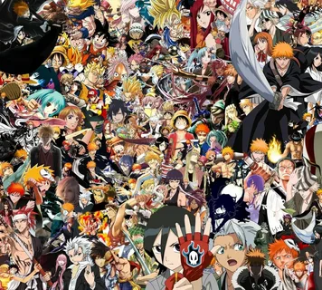

Добро пожаловать на сайт про Аниме. Аниме-японская анимация, отличающаяся ярким стилем и разнообразием жанров.Она охватывает множество тем, от приключений и романтики до фэнтези и научной фантастики. Аниме стало популярным во всем мире благодаря уникальным персонажам и глубоким сюжетом. Множество аниме адаптировано из манги, японских комиксов. Культовые сериалы о которых я написал привлекают миллионы зрителей, cоздавая преданных поклонников и активные сообщества. Существуют как полнометражные фильмы, так и сериалы, которые завоевали сердца миллионов поклонников. Аниме-фестивали и конвенции собирают фанатов со всего мира, создавая уникальную культуру и сообщество. В последние годы аниме стало частью мейнстрима, получая признание на международных кинофестивалях и наградах.
Аниме выделяется среди других жанров анимации благодаря своему уникальному художественному стилю, который включает яркие цвета, выразительные лица и детализированные фоны. В отличие от западных мультфильмов, аниме часто затрагивает сложные темы, такие как философия, психология и социальные проблемы, что делает его более глубоким и многослойным. Персонажи в аниме часто имеют ярко выраженные черты и развиваются на протяжении сюжета. Кроме того, аниме разнообразно по жанрам — от романтики и комедии до ужасов и научной фантастики, что позволяет привлекать широкую аудиторию. Музыкальное сопровождение также играет важную роль, создавая атмосферу и усиливая эмоции.
Серия аниме обычно состоит из следующих элементов:
Введение: Знакомство с главными героями и миром.
Конфликт: Появление проблемы или антагониста.
Развитие: Герои сталкиваются с трудностями, развиваются отношения.
Кульминация: Напряжённый момент, где решается конфликт.
Развязка: Итоги событий, изменения в персонажах.
Завершение: Подготовка к следующей серии или финалу.